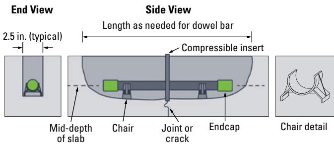
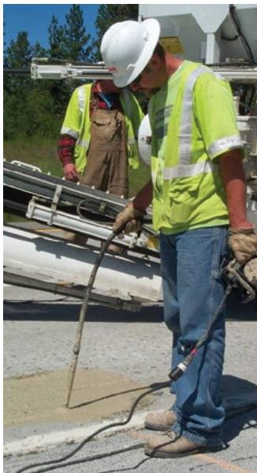
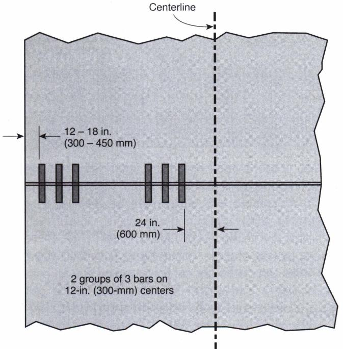

Slot Stitching
Slot stitching is a load‑transfer restoration technique used on jointed plain concrete pavements and longitudinal cracks that have lost effective wheel‑load transfer because original dowel bars are missing, failed, or the joint has become faulted, leading to uneven slab deflection, pumping and poor ride quality [1][2][3]. The treatment cuts shallow slots roughly perpendicular across the affected joint or crack, places deformed steel tie/dowel bars at least one inch in diameter (often with compressible inserts or low‑shrinkage grout) so that the bar centre lies at mid‑pavement depth and is encased in a durable backfill, thereby re‑establishing aggregate interlock and restoring load sharing between adjacent slabs [1][3]. Slots are installed in parallel rows within a tolerance of about 6 mm per 300 mm of bar length, spaced approximately 20 in for heavy traffic or 30 in for lighter loads, and finished flush with the pavement surface, providing a repaired joint that limits faulting, reduces reflective cracking and extends service life while preserving ride quality [2][5].
Sources (5)
Purpose and treatment objectives
Slot stitching is employed on jointed plain concrete pavements and other concrete surfaces that exhibit non‑working longitudinal cracks or joints whose opening has degraded load transfer, leading to uneven slab deflection and poor ride quality [1][2][3]. The distress targeted includes joint faulting caused by absent or deteriorated load‑transfer devices as well as longitudinal cracking that permits water pumping, slab separation, and reflective cracking in subsequent overlays [1][2][3]. By cutting slots approximately perpendicular across the affected joint or crack and inserting deformed tie bars—typically one inch in diameter or larger—with compressible inserts or low‑shrinkage grout, the treatment re‑establishes effective wheel‑load transfer and restores aggregate interlock [1][3]. Restoring this load transfer reduces faulting‑induced cracking, limits further crack propagation, curtails slab deflection, and prevents the development of reflective cracks when an overlay is placed [2][3]. The method is especially indicated for wider or more severe longitudinal cracks where cross‑stitching is less effective, provided the cracks are non‑working so that surface roughness does not increase excessively [3][1].
The following figure illustrates a common cause of such distress, showing longitudinal cracking resulting from inadequate saw cut depths in quarter-point longitudinal joints.
 Longitudinal cracking in a concrete pavement slab caused by inadequate saw cut depths. [2]
Longitudinal cracking in a concrete pavement slab caused by inadequate saw cut depths. [2]
The image displays a long, irregular longitudinal crack running down the center of a grooved concrete pavement surface.
Slot stitching is applied when a concrete joint lacks adequate reinforcement because the original tie bars have failed or were never installed, creating a deficiency that can jeopardize the performance of an overlay. The technique also targets nonworking longitudinal cracks in pavements that are otherwise in relatively good condition, where insufficient load transfer across the crack threatens structural integrity and may lead to faulting or further deterioration. By retrofitting tie bars through a slot‑stitching operation or by reinforcing the crack with cross‑stitched bars, the treatment restores structural continuity and improves load transfer across joints or cracks that exhibit poor load‑transfer performance. [1][2][3][4][5]
The following figure illustrates a saw cut made in a bonded concrete overlay to address a working transverse crack in the underlying pavement.
 Saw cut in bonded concrete overlay over working transverse crack in underlying pavement on I-255 near St. Louis, Missouri [2]
Saw cut in bonded concrete overlay over working transverse crack in underlying pavement on I-255 near St. Louis, Missouri [2]
The image displays a longitudinal saw cut made through a light-colored concrete surface. This feature represents the treatment of a working transverse crack in underlying pavement using a bonded overlay, which is a method used to address nonworking longitudinal cracks or joints that lack adequate reinforcement.
[1] — Ch. 6 (pp. 70–71); [2] — Ch. 4 (pp. 164–167), Ch. 18 (pp. 394–395); [3] — Ch. 8 (pp. 187–210); [4] — App. A (p. 108); [5] — Ch. 8 (p. 177)
Slot stitching is applied to longitudinal cracks and joints in concrete pavements with the primary aim of preventing further deterioration of those fractures[2][3]. The method cuts shallow slots across the crack and installs deformed tie bars or dowel bars, typically one inch in diameter or larger, which bind adjacent slabs together and keep the fracture tightly closed[2][3]. By maintaining aggregate interlock and restoring the joint’s ability to transfer loads, slot stitching restores load‑transfer functionality that had been lost, eliminating faulting mechanisms that degrade ride quality[1][2]. Because the repaired joint regains continuity, deflection, pumping, and reflective cracking are reduced, preserving overall pavement functionality[2][3]. The combined effect of damage repair, load‑transfer restoration, and halted crack opening extends the remaining service life of the pavement[1][3].
[1] — Ch. 6 (pp. 70–71); [2] — Ch. 4 (pp. 128–167), Ch. 18 (pp. 394–395); [3] — Ch. 8 (p. 209)
Distress characterization and causes
Slot stitching addresses joint faulting that appears at the transverse joints of jointed plain concrete pavements, particularly those constructed without dowel bars or where existing load‑transfer devices have deteriorated. The distress is common in undoweled JPCPs and older slabs, leading to loss of load transfer that causes excessive deflection, cracking and a noticeably rough ride. Over time, especially under heavy traffic, the joint’s ability to transfer load degrades progressively, turning minor faulting into severe ride‑quality problems. This poor ride quality can impair vehicle handling and operational efficiency, making restoration necessary. [1]
[1] — Ch. 6 (pp. 70–71)
The distress addressed by slot stitching is primarily joint faulting that develops when a concrete pavement joint lacks sufficient load‑transfer capacity, which can result from the absence of dowel bars or the degradation of existing dowels under heavy traffic loads [1]. Without effective load transfer, slabs experience differential deflection and cracking, and the loss of aggregate interlock across longitudinal joints permits water to be pumped through the opening, further reducing support and accelerating crack widening [2][3]. Water infiltration is especially problematic when joint openings exceed approximately 0.03 in, because the enlarged gap allows pumping action that erodes the sub‑base and undermines shear resistance at the joint faces [3]. The combination of heavy vehicle loading and inadequate shear capacity leads to loss of support, corner breaks, and progressive faulting of the pavement surface [1][3]. In addition, insufficient drainage—such as lack of edge drains—allows moisture to remain in the joint, intensifying the deterioration mechanisms described above [1]. Restoring load transfer by installing slot‑cut dowel bars or deformed tie bars that are grouted into slots reestablishes continuity across the joint and eliminates the primary mechanism driving faulting [1][3]. The design of the slot‑stitch pattern reflects traffic intensity, with hole spacings commonly set at 20 inches for heavy traffic to ensure adequate load transfer through aggregate interlock and the inserted reinforcement [2].
The figure below illustrates the concrete pavement joint faulting that results from these deterioration mechanisms.
 Concrete pavement joint faulting [2]
Concrete pavement joint faulting [2]
The image displays a close-up view of a longitudinal crack in a concrete pavement where the slab on the left is elevated relative to the adjacent slab. A wooden ruler is held across the joint opening, visually demonstrating that the gap has widened significantly beyond typical tolerances.
[1] — Ch. 6 (pp. 70–71); [2] — Ch. 4 (pp. 164–167); [3] — Ch. 8 (p. 187)
Applicability and treatment selection
Slot stitching is indicated for jointed plain concrete pavements that were constructed without dowel bars or whose existing load‑transfer devices have deteriorated, a condition commonly found in older slabs where the dominant distress is loss of load transfer rather than surface cracking or structural failure. The treatment also targets pavements that exhibit longitudinal cracks but for which a full‑depth repair or slab replacement is not desired, providing an alternative that restores continuity across the crack. It is most effective when joint faulting, inadequate drainage, and slab elevation discrepancies are present and can be corrected before any subsequent diamond grinding operation. Slot stitching may be employed under both heavy‑truck and light‑truck traffic conditions; for heavy traffic the recommended spacing between the slot holes is about twenty inches, whereas a thirty‑inch spacing is advised when traffic loads are lighter. No additional environmental or site constraints are specified beyond the need to address the identified joint and crack conditions, allowing the method to be used in typical climatic settings provided that drainage issues can be remedied as part of the repair. [1][2]
[1] — Ch. 6 (pp. 70–71); [2] — Ch. 4 (pp. 164–167)
Slot stitching may only be employed when the joint or crack is non‑working and the surrounding concrete remains sound. If a longitudinal joint opens and closes under traffic, shows appreciable deterioration in its lower portion, or is an active (working) crack, the technique becomes inappropriate because the inserted tie bars cannot reliably restrain movement and may induce additional cracking elsewhere. The method also proves unsuitable on continuously reinforced concrete pavement (CRCP), where the required slot depth is shallow; such shallow slots make the repair material vulnerable to failure when vertical movements are significant. Moreover, for minor or less severe cracks a faster, cheaper and less visually intrusive solution—such as cross‑stitching, dowel‑bar retrofit, diamond grinding, or simple patching—is preferred, since slot stitching tends to increase surface roughness and is more appropriate for wider, more severe cracks. The deformed tie bars used in the repair are typically one inch in diameter or larger. When any of these conditions are present, another preservation or rehabilitation approach should be selected. [3]
[3] — Ch. 8 (pp. 187–210)
Condition assessment and timing
Slot stitching is recommended when a concrete pavement exhibits loss of load‑transfer capability across longitudinal joints or cracks while the surrounding slab remains essentially sound and overall distress is low [1][3]. The loss of load transfer is typically manifested by joint faulting and degraded ride quality in undoweled jointed plain concrete pavements or in older joints where existing dowel bars have become ineffective [1]. It is also appropriate when the longitudinal cracks are still open enough that pulling the faces together can improve load transfer, but have not progressed to severe loss of structural integrity, extensive pumping, or significant vertical movement [2][3]. The method targets tight or non‑working cracks that can be held closed, especially before placing an unbonded concrete overlay where reflective cracking is a concern and the overlay joints cannot follow an irregular crack path [2]. At this early to intermediate stage the pavement surface condition remains acceptable, aggregate interlock across the joint is still present, and the cracks may be wider than those suitable for cross‑stitching but not yet exhibiting advanced failure such as loss of support or faulting [3][2]. Applying deformed tie bars grouted into shallow slots restores continuity, reestablishes load sharing between slabs, and arrests further opening of the joint or crack [3][1]. Caution is advised on continuously reinforced concrete pavements because shallow slots are more vulnerable if large vertical movements occur [3].
Slot stitching is indicated when a pavement joint requires new tie bars because the existing ones are no longer functional or were never installed. In such cases—specifically when original tie bars have failed or the pavement was built without them—the retrofit should be performed using cross‑stitching or slot‑stitching before placing an overlay. [1][2][3][4]
[1] — Ch. 6 (pp. 70–71); [2] — Ch. 4 (pp. 164–167), Ch. 18 (pp. 394–395); [3] — Ch. 8 (pp. 187–210); [4] — App. A (p. 108)
Materials and repair details
Slot stitching begins by cutting shallow slots across a longitudinal joint or crack, the cuts being made perpendicular to the joint axis with gang‑mounted saw blades on a dedicated slot‑cutting machine or with a walk‑behind saw as appropriate [1][3]. Each slot is then prepared by lightly scalping the concrete with a lightweight jack hammer, flattening the bottom of the slot, and finally cleaning the surface with sandblasting or air‑blasting to remove debris [1]. A deformed steel reinforcement bar, commonly at least one inch in diameter, is positioned in each slot on a dowel chair that carries a bond‑breaker coating and an expansion cap on one or both ends; a compressible insert may be placed at the centre of the bar to define the joint width [1][3]. When deformed tie bars are used, they serve the same function as traditional dowels but allow some vertical movement while preserving aggregate interlock [3]. The reinforcement is secured in the slot with a repair material that complies with the manufacturer’s specifications, such as an epoxy grout for deformed bars or a very low‑shrinkage backfill selected for partial‑depth concrete repair, and the material is consolidated with a small spud‑type vibrator until it fully surrounds the bar [1][2][3]. A minimum cover of one inch must be maintained at the bottom of each slot or hole to protect the reinforcement from corrosion and to provide adequate bearing [2]. Slot spacing is determined by anticipated traffic, with bars placed approximately every twenty inches for heavy truck traffic and about thirty inches apart for lighter traffic conditions [2]. The slots are cut only partway through the slab so that epoxy or grout does not flow out of the opening, and if the adjacent slabs have separated a joint reformer and caulking are applied before backfilling to prevent material leakage [2][3]. After the repair material is placed and vibrated, the surface is finished flush with the surrounding pavement and allowed to cure under conditions that limit shrinkage, after which any necessary crack sealing or diamond grinding may be performed if the joint was not tight at the time of repair [1][3].
Slot stitching calls for slots that are cut parallel to each other and to the roadway centreline, with a positional tolerance of about six millimetres per three hundred millimetres of dowel bar length. The number of slots per wheel‑path is dictated by the contract documents, and each slot must be positioned to avoid existing longitudinal cracks while extending an appropriate distance beyond the joint or crack on both sides. Slots are sawn deep enough so that the centre of the dowel bar sits at mid‑pavement depth, but not so deep as to cause corner cracking, and the slot width is set exactly to match the width of the dowel‑bar chairs. [1][2][3][5]
The following figure illustrates the specific details for dowel bar retrofit slots.

Dowel bar retrofit slot details showing end and side views of the installation. [3]The figure displays a schematic cross-section of a dowel bar retrofit, illustrating how a steel bar is positioned within a sawcut slot across a joint or crack in concrete pavement. It shows the use of chairs to elevate the dowel bar so its center lies at the mid-depth of the slab, with compressible inserts and endcaps installed to facilitate load transfer between adjacent slabs.
[1] — Ch. 6 (pp. 70–71); [2] — Ch. 4 (pp. 164–167); [3] — Ch. 8 (p. 209); [5] — Ch. 8 (p. 171)
Slot stitching performance depends first on selecting a repair material that can form a durable bond to the existing concrete and is appropriate for partial‑depth repairs. The material must be a grout or backfill with very low shrinkage so that the sealed joint remains tight over time and does not lose contact as the slab moves. Compatibility requires that the slot surfaces be prepared by sandblasting, air‑blasting, cleaning, and vibrating to expose sound concrete and achieve full contact before the material is placed. When the joint or crack is unusually wide, reforming the joint and applying a caulk seal prior to backfill prevents the low‑shrinkage material from flowing into unwanted gaps. The deformed steel tie bars used in slot stitching are typically at least one inch in diameter and must be set in epoxy with a minimum of one inch of cover at the bottom of the hole. Bars should be installed only to a partial depth, stopping short of penetrating the full slab thickness so that grout does not run out of the bottom of the slot. Bar spacing is governed by traffic level; for higher loads tighter spacing such as twelve‑inch centers is recommended to achieve effective load transfer. The existing pavement condition must be relatively good, with sound concrete showing little or no distress and especially free of deterioration in the lower portion of the slab. The longitudinal joint or crack to be treated must be non‑working, meaning it is not opening and closing under traffic, because the method relies on existing aggregate interlock between adjacent slabs. Adequate aggregate interlock is essential since the tie bar restrains crack widening by working with that interlock; if interlock is lost, slot stitching may be ineffective. Slot stitching is most appropriate where load transfer has been lost, such as undoweled jointed plain concrete pavements or older slabs exhibiting faulting, because restoring load transfer is the primary purpose of the treatment. Caution is advised on continuously reinforced concrete pavements because the shallow slots make the repair material more susceptible to failure under significant vertical movements.
The performance of slot stitching is fundamentally linked to the condition of the existing joint system; when original tie bars have failed or were never installed, retrofitting new tie bars via slot stitching before an overlay becomes necessary, whereas functional existing tie bars make additional stitching unnecessary. [4] Beyond the joint integrity, the treatment works best on concrete pavements that are essentially sound, exhibiting little or no surface distress but suffering from inadequate load transfer across joints or non‑working longitudinal cracks. [5] For effective load transfer, the slots must be cut parallel to one another and to the roadway centreline within a typical tolerance of six millimetres per three hundred millimetres of dowel length as specified in contract documents. [5] The slot locations are required to miss any existing longitudinal cracks and to extend sufficiently beyond each side of a joint or crack, a requirement that is especially critical for skewed joints. [5] Each cut must be deep enough so that the centre of the dowel bar lies at the mid‑depth of the pavement; cuts that are too deep can induce corner cracking under traffic loads. [5] The width of each slot must correspond exactly to the width of the dowel‑bar chairs, ensuring a proper fit and effective load transfer between the new dowels and the existing slab. [5]
[1] — Ch. 6 (pp. 70–71); [2] — Ch. 4 (pp. 164–167); [3] — Ch. 8 (pp. 187–210); [4] — App. A (p. 108); [5] — Ch. 8 (pp. 171–177)
Treatment procedures
The procedure starts by determining the spacing of the deformed steel bars, which the guides recommend as approximately 20 in for heavy traffic and 30 in for light traffic [2]. Slots are then cut roughly perpendicular to the longitudinal joint or crack using gang‑mounted saw blades on a slot‑cutting machine or, where appropriate, a walk‑behind saw, creating straight openings that follow the required alignment [1][3]. Each slot is first scalped with a lightweight jack hammer and the bottom flattened with a hammerhead to remove loose material and achieve a uniform depth, after which all concrete debris is removed from the opening [1]. The cleaned slots are further prepared by sandblasting and air‑blasting the surfaces to produce a clean, roughened face that will promote bonding of the repair material [1]; if the slabs have separated, the joint is reformed and caulked before backfilling [3]. A deformed steel dowel bar, set on a chair, coated with a bond breaker, capped with expansion caps and containing a compressible insert, is positioned in each slot, ensuring that at least one inch of cover remains beneath the bar [1]; the same placement step is described as inserting the bar into the cleaned slot while maintaining the required cover [2][3]. For slots drilled rather than cut, epoxy is injected around the bar and the void is backfilled, whereas for cut slots a low‑shrinkage concrete or grout backfill material is poured in accordance with the manufacturer’s recommendations [1][2][3]. The backfill is consolidated by using a small spud‑type vibrator or by vibrating until the material fully surrounds the bar, eliminating voids and ensuring complete encasement [1][3]. After consolidation the surface is finished flush with the surrounding pavement; any necessary crack sealing or diamond grinding may be performed after the epoxy has set to restore the original profile before traffic returns [2]; the repair is then cured in a manner that minimizes shrinkage, following the curing procedures specified by the material supplier [1]. The completed slot‑stitching work remains protected until the cure is achieved and the pavement can be reopened to service [1][3].
The following figure illustrates the process of placing patching material into the prepared dowel bar slots.

Worker placing patching material into dowel bar slots. [3]The image shows a construction worker in high-visibility safety gear using a hose to pour a granular backfill material into a narrow slot cut across the pavement surface.
[1] — Ch. 6 (pp. 70–71); [2] — Ch. 4 (pp. 164–167); [3] — Ch. 8 (p. 209)
Slot stitching is performed with equipment that includes either a gang‑mounted saw blade on a purpose‑built slot‑cutting machine or a walk‑behind saw, both capable of cutting slots roughly perpendicular to the longitudinal joint or crack [1][3]. In addition, a drilling rig that can produce angled holes or slots stopped short of the slab underside is employed when the method calls for drilled reinforcement placement [2]. After each slot is cut, a lightweight jack hammer is used to scalp and flatten the concrete within the opening, and the exposed surfaces are then cleaned by sand‑blasting or air‑blasting before any material is placed [1]. The reinforcement element consists of a deformed tied bar or dowel bar that is seated on a chair, may be coated with a bond breaker, capped with an expansion cap, and contains a compressible insert; the bar is positioned in each prepared slot prior to backfilling [1][2]. The backfill material is a low‑shrinkage repair mix that is poured into the slot or drilled hole, consolidated with a small spud‑type vibrator to ensure thorough encasement of the reinforcement, and then finished flush with the surrounding pavement surface [1][3]. When epoxy is used in the drilled‑hole variant, the bar is inserted after drilling to the prescribed depth, the epoxy is placed while maintaining at least a one‑inch cover over the bottom of the hole, and backfilling follows to prevent grout from escaping through the slab underside [2]. The sequence proceeds from cutting or drilling, through cleaning, reinforcement placement, material filling and vibration, to final finishing and curing designed to minimize shrinkage [1][3][2]. The guides do not specify particular environmental conditions such as temperature or moisture limits that would restrict the execution of slot stitching, implying that standard construction weather considerations apply but no explicit thresholds are provided [1][3]. Traffic considerations influence the spacing of reinforcement, with tighter 20‑inch intervals recommended for sections subjected to heavy truck traffic and wider 30‑inch intervals used where traffic is light; however, no direct traffic control or restriction requirements are detailed beyond this design adjustment [2].
[1] — Ch. 6 (pp. 70–71); [2] — Ch. 4 (pp. 164–167); [3] — Ch. 8 (p. 209)
Quality and workmanship
During slot‑stitching inspection the auditor must verify that each cut slot follows the required geometry and positioning: slots should run parallel to one another and to the roadway centreline within the contract tolerance of typically 6 mm per 300 mm of dowel length; they must be placed so they avoid existing longitudinal cracks and extend the prescribed distance on both sides of the joint or crack, especially for skewed features; the depth of each slot is checked to ensure the dowel bar centre lies at mid‑pavement depth without being overly deep, which could cause corner cracking; finally the slot width is confirmed to match exactly the width of the dowel‑bar chairs. [5]
[5] — Ch. 8 (p. 171)
A satisfactory slot‑stitching job requires the slots to be cut parallel to each other and to the roadway centreline within the contract tolerance (about 6 mm per 300 mm of dowel length), with the correct number of slots per wheelpath as specified. The slots must avoid existing longitudinal cracks, extend the required distance on both sides of the joint or crack, and be cut to a depth that places the dowel bar centre at mid‑pavement depth without being overly deep. Finally, each slot’s width must match the exact width of the dowel‑bar chair. [5]
The following figure illustrates a recommended dowel bar configuration to achieve these specifications.

Recommended dowel bar configuration for slot stitching. [5]The figure illustrates the recommended layout of dowel bars, showing two groups of three bars placed within a wheelpath relative to the pavement centerline and lane edge.
[5] — Ch. 8 (p. 171)
Performance and service life
Slot stitching is applied as a load‑transfer restoration technique that inserts deformed reinforcement bars into slots cut across longitudinal cracks or joints, thereby reestablishing the ability of adjacent slabs to share loads and keeping the crack tightly closed[1][2][3]. By holding the joint tightly together the treatment preserves aggregate interlock, reduces slab deflection, limits pumping and curtails further crack deterioration, which collectively improves ride quality and overall pavement condition[1][2][3]. The method does not require precise alignment of the slots because the deformed bars themselves maintain joint integrity, and the low‑shrinkage backfill that is vibrated to fully encase the bar enhances joint durability[3]. When dowel‑sized bars are placed at close spacing the load‑transfer capacity can be increased beyond merely preventing opening; otherwise the primary benefit is prevention of additional joint movement rather than a substantial boost in transfer efficiency[2]. Combining slot stitching with diamond grinding further maintains a smooth surface for the remainder of the design period, effectively extending pavement durability and expected service life[1]. Across the guides the treatment is described as a preservation method that sustains functional load transfer and provides at least a modest extension of useful life, even though no specific service‑life value is assigned[2][3].
[1] — Ch. 6 (pp. 70–71); [2] — Ch. 4 (pp. 164–167); [3] — Ch. 8 (p. 209)
Slot stitching is commonly applied to relatively wide or severe longitudinal cracks, yet it can give rise to a number of recurring distresses. The repaired area frequently ends up with a rougher surface texture and may develop new cracking away from the stitched joint, especially when the original crack remains active at the time of treatment because ongoing movement can exceed the capacity of the reinforcement [3]. A second frequent failure is loss of integrity of the repair material under appreciable vertical pavement movements; this problem is amplified on continuously reinforced concrete pavements where slots must be shallower, making the placed material more vulnerable to displacement and cracking [3]. When slots are cut deeper than recommended, the dowel bars can sit below the pavement mid‑depth, creating stress concentrations that manifest as corner cracks once traffic loads are applied, a distress directly linked to slot depth and loading magnitude [5]. Maintaining the specified parallelism tolerance of typically six millimetres per three hundred millimetres of dowel length, aligning slots away from existing longitudinal cracks, and sizing the slot width precisely to match the dowel‑bar chair are critical controls that keep the dowel correctly positioned and help prevent these failures [5]. Consequently, inadequate assessment of crack activity, excessive vertical movement—particularly on CRCP where shallow slots are required—and improper slot depth, alignment, or width together drive the development of the observed distresses [3][5].
[3] — Ch. 8 (pp. 209–210); [5] — Ch. 8 (p. 171)
Monitoring and follow-up
If a slot‑stitched joint begins to show new cracks extending beyond the repaired area or the pavement surface becomes noticeably rougher after treatment, those trends indicate that the original repair has not fully resolved the distress and additional maintenance, repair, or rehabilitation is needed. [3]
[3] — Ch. 8 (p. 210)
References
- T. Van Dam, P. Taylor, G. Fick, D. Gress, M. Van Geem, and E. Lorenz, "Sustainable Concrete Pavements: A Manual of Practice," National Concrete Pavement Technology Center, 2011. [Online]. Available: https://www.cptechcenter.org/wp-content/uploads/2018/03/Sustainable_Concrete_Pavement_508.pdf
- D. Harrington, M. Ayers, T. Cackler, G. Fick, D. Schwartz, K. Smith, M. B. Snyder, and T. Van Dam, "Guide for Concrete Pavement Distress Assessments and Solutions: Identification, Causes, Prevention, and Repair," National Concrete Pavement Technology Center, 2018. [Online]. Available: https://www.cptechcenter.org/wp-content/uploads/2019/01/concrete_pvmt_distress_assessments_and_solutions_guide_w_cvr.pdf
- K. Smith, M. Grogg, P. Ram, K. Smith, and D. Harrington, "Concrete Pavement Preservation Guide (Third Edition)," National Concrete Pavement Technology Center, 2022. [Online]. Available: https://www.cptechcenter.org/wp-content/uploads/2022/08/concrete_pvmt_preservation_guide_3rd_edition_web.pdf
- G. Fick, J. Gross, M. B. Snyder, D. Harrington, J. Roesler, and T. Cackler, "Guide to Concrete Overlays (Fourth Edition)," National Concrete Pavement Technology Center, 2021. [Online]. Available: https://www.cptechcenter.org/wp-content/uploads/2021/11/guide_to_concrete_overlays_4th_Ed_web.pdf
- K. D. Smith, T. E. Hoerner, and D. G. Peshkin, "Concrete Pavement Preservation Workshop," National Concrete Pavement Technology Center, 2008. [Online]. Available: https://www.cptechcenter.org/wp-content/uploads/2018/08/preservation_reference_manual.pdf
Feedback on this page